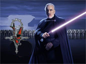

Forums galactiques > Taverne galactique : lieu de discussion informel > Présentation of the Coalitions
| Nathaniel Réputation à la taverne : 66  18/08 ETU 13:36 | Score : 0 Détails N'is there pas de commandants a la recherche of Coalitions?
| ||
| Tyrian Réputation à la taverne : 1334  18/08 ETU 16:41  | Score : 0 Détails Si ya ! Mais lorsque je parcours la présentation de ces coalitions, je m'aperçois qu'elles raisonnent un peu à l'envers. J'ai le sentiment qu'il faut leur "plaire" pour pouvoir en faire partie !
Aucune n'indique clairement qu'elle cherche à recruter. | ||
| Nathaniel Réputation à la taverne : 66 18/08 ETU 17:59 | Score : 0 Détails Ceci is normal.
Les coalitions don't veulent accepter n'importe who. They veulent des commandants qui ont les same motivations qu'eux. Most of them recrute. Il faut juste contacter them. | ||
| Mac Polar III Réputation à la taverne : 171  18/08 ETU 18:22 | Score : 0 Détails Je vous encourage a contacter le mouvement discipliniste de libération, qui n'est pas une coalition a proprement parler, mais une organisation informelle qui combat et détruira les red T.
| ||
| Lanfeust Réputation à la taverne : 422  18/08 ETU 18:30 | Score : 0 Détails Hem, juste comme ça, c'est elle qui a tué Mata Hari ou elle s'est suicidée ?
| ||
| Sid Vicious Réputation à la taverne : 182  18/08 ETU 18:32 | Score : 0 Détails elle s'est suicidé par désespoir devant la Résistance contre les Red-T qui était en train de s'accomplir...
(oui je suis optimiste et alors?) | ||
| Tyrian Réputation à la taverne : 1334 18/08 ETU 18:32 | Score : 0 Détails Je vous remercie de vos réponses.
Je comprends bien. Néanmoins, comment les responsables font-ils pour connaîtres la véritable motivation d'un commandant et son aptitude à adopter leurs "point de vue", s'ils ne les encourageant pas en se montrant un peu plus ouverts. Je reste sur un sentiment de trop d'exigence ... a priori. | ||
| sayan69 Réputation à la taverne : 572  18/08 ETU 19:28 | Score : 0 Détails Chacune a ses critères mais vous savez celui qui reste prédominant et majoritaire c'est que vous ayez l'heur de plaire au minimum à un des membres et pour cela il suffit de ne pas être un boulet pour trouver une coalition! Après vous choisissez selon vos convictions ou votre absence de conviction(dans ce cas joignez Planitia!^^)
| ||
| lumiére éternelle II Réputation à la taverne : 10  18/08 ETU 20:46 | Score : 0 Détails -Nom de la coalition: empire brillant
-Leaders de la coalition:lumière éternelle II -idéaux: se défendre d'éventuel agresseur extérieur de cet empire -signe particulier: l'empire se situe dans un seul systéme ! -signe particulier n°2: alliance entre les habitants de l'empire -recrutement: nous ne recrutons pas pour le moment -Membre : galeos et baroque | ||
| lumiére éternelle II Réputation à la taverne : 10 19/08 ETU 01:23 | Score : 0 Détails modification de quelque détails
-Nom de la coalition: empire brillant -Leaders de la coalition:lumière éternelle II -idéaux: se défendre d'éventuel agresseur extérieur de cet empire et zigouiller les résistants contre l'empire des sens -signe particulier: l'empire brillant se situe dans un seul systéme ! -signe particulier n°2: l'empire est complétement peint en jaune -recrutement: nous ne recrutons pas pour le moment -Membre : galeos et baroque | ||
| capitaine solo Réputation à la taverne : 5  19/08 ETU 20:22 | Score : 0 Détails recherche coalition, contacter moi par MP
| ||
| Thot Réputation à la taverne : 577  19/08 ETU 20:26 | Score : 0 Détails Ce n'est en aucun cas a vous de demander a etre recruté ... Vous devez faire vos preuves, et demandez vous meme a la coalition ...
On croit rever la ! Il faut maintenant aller les chercher ^^ !! | ||
| Tyrian Réputation à la taverne : 1334 19/08 ETU 21:06 | Score : 0 Détails
Môsieur Thot ! Vos propos me laissent...dubitatif. Les coalitions n'existent qu'à travers les commandants. Sans eux, il n'y a pas de coalition. Pardonnez-moi sur j'ai l'air de répeter mon propos sous des formes différentes, mais je tente ainsi d'augmenter vos chances de les comprendre. Bien entendu, je suis d'accord avec vous lorsque vous dites qu'il faut faire ses preuves. Mais comment faire si vous ne faites pas partie d'une coalition? Vous croyez que des petits exploits individuels et isolés vont faire de vous une recrue de choix ? | ||
| Mablane Réputation à la taverne : 1399  19/08 ETU 21:09 | Score : 0 Détails Ce qu'il veut dire par là, c'est plutôt, je pense, qu'il faut connaître les idéaux et les principes des commandants, pour pouvoir les acceuillir dans une coalition...
| ||
| Thot Réputation à la taverne : 577 19/08 ETU 21:10 | Score : 0 Détails Thot apprecia l'intervention de ce Commandant !
Il lui répondit : Commandant, je pense que vous exagerez mes propos ! Un Commandant doit faire la démarche vers la coalition, et non le contraire ... Ce ne doit pas etre a nous, Commandant de coalition, d'aller vers les commandants, a part si ceux ci correspondent a nos ideaux, principes, ou autres ! Han Solo arrive, et demande s'il peut faire partie d'une coalition ... Que savez vous sur lui ? Rien, niet, nada ... Il doit faire ses preuves, dans ce sens la : prendre position, montrer qu'il s'interesse a Origine, et encore a autres choses ... Voila ce que je voulais dire !!! | ||
| Tyrian Réputation à la taverne : 1334 19/08 ETU 21:44 | Score : 0 Détails
Ha oui certes. Mais que diantre ! Pourquoi n'a-t-il pas immédiatement dit ce qu'il voulait dire? Cela m'eut évité de dire ce qu'autrement je n'aurais pas dit ! Merci pour ces éclaircissements ! | ||
| Sylvania Réputation à la taverne : 394  21/08 ETU 12:13 | Score : 0 Détails Pour les descriptions de coalitions, c'est par ici !!!
(premieres pages principalement) en d'autres termes : UP !!! | ||
| Nathaniel Réputation à la taverne : 66 21/08 ETU 13:21 | Score : 0 Détails Ceci est un little résumé des coalitions
Nom de la coalition: Famiglia Ex Morte Leaders de la coalition: les Trois Parrains - Arigliano Arguello, Kimimagio, Renato Mandalore - idéaux: indépendance, fratrie, secret, honneur, loyauté, égalité des sexes. signe particulier: ce n'est pas une démocratie, les Parrains consultent systématiquement les membres avant de prendre une décision mais décident en dernier ressort. signe particulier n°2: allergie aux boulets recrutement: ouvert mais restreint aux personnes motivées et désireuses d'apporter leur contribution active à la Famiglia. *** Nom de la coalition : Les Chevaliers de l'Apocalypse *** Leaders : Salem (Grand Patron Fondateur) - Death Angel (Bras-droit) *** Idéaux : fratrie, secret, honneur, loyauté *** Signe particulier : très bonne organisation animée par une hierarchie, et par l'ouverture aux conseils de tous *** Signe particulier n°2 : allergie aux boulets *** Recrutement : déposez votre candidature dans le topic spécial de la Taverne Galactique. Ouvert aux gens sérieux ayant pris connaissances des règles nécessaires au bon fonctionnement de la Coalition. Nom de la coalition:Libertadores Leaders de la coalition:Wes Trebor. Co fondateurs:Vincenzo Rimi,Samsagace. Idéaux:la liberté^^ Signe particulier:prêt à défendre la liberté et l'expression jusqu'à la mort. Recrutement:ouvert mais sous haute surveillance à cause d'espions. Nom de la coalition : Lune Blanche Leaders de la coalition : Thot, fondateur de cette coalition ... Idéaux : respect des idéaux de chacun, altruisme envers les autres, aides grace aux dons pour les jeunes Commandants, egalité, liberté ... Signe particulier : Je suis tres exigeant envers les nouveaux Commandants ... L'aide n'est apporté que si celle-ci marche dans les deux sens ... Recrutement: Limité a un nombre de Commandant débutant, ouvert pour les Commandant désireux de m'aider dans ma quete de l'altruisme ... *** Nom de la coalition : Red Tantra *** Leaders : Tous les Reds T ont une âme de leader. *** Idéaux : rouge, plaisir, sensualité, amour, liberté *** Signe particulier : Empire des Sens Connection *** Signe particulier n°2 : Izakaya, bar le plus cool de la Galaxie et orgies à toutes heures. *** Recrutement : Pas de recrutement ou très peu, conditions drastiques, possibilité de s'allier à l'Empire des Sens néanmoins. Nom de la coalition : Organisation des Peuples Unis Leaders de la coalition : Eh ben... euh... On va dire moi, le fondateur... Idéaux : Liberté, égalité, solidarité, fraternité, paix, respect des droits fondamentaux, tolérance, justice... Bref, démocratie... Signe particulier : L'OPU est régie par la Charte, texte fondateur et unique. Recrutement : Ouvert à tous, sans aucune distinction ni préférence, mais avec une grande condition : prendre connaissance et approuver la Charte, et s'engager à devenir un Membre actif et dévoué. If you want more of informations, you can visite : http://apocalypsis.free.fr/histoire/index.php?title=Organisation_des_Peuples_Unis Nom de la coalition: Planitia Leaders de la coalition: Oui il y en a! idéaux: Bof si c'est bien payé peut être signe particulier: les Planitiens n'obéissent pas à une hiérarchie clairement définie ni à un système de prise de décision gravé dans la pierre, la parole des anciens a un poids moral qui fait basculer la décision si nécessaire, concertation obligatoire! signe particulier n°2: Les membres savent pouvoir compter sur la coalition tant qu'ils agissent dans le respect de ses décisions recrutement: ça dépend de l'humeur du moment et de la formulation de la proposition! -Nom de la coalition: Str8 Outta Newdeun -Leaders de la coalition: Kliketi Klang -idéaux: aider de jeune commandant (moi par exemple ^^) -signe particulier: Chaque menbre de cette coalition posséde des systemes fermés et grace au commandant Al-kacha ont aprend a avoir une bonne armée et a ne pas fair les "boulets" ! -signe particulier n°2: coalition simpatique ^^ -recrutement: Envoyer un message personel au leader. -Nom de la coalition: empire brillant -Leaders de la coalition:lumière éternelle II -idéaux: se défendre d'éventuel agresseur extérieur de cet empire et zigouiller les résistants contre l'empire des sens -signe particulier: l'empire brillant se situe dans un seul systéme ! -signe particulier n°2: l'empire est complétement peint en jaune -recrutement: nous ne recrutons pas pour le moment -Membre : galeos et baroque Nom de la coalition: willerpark Leaders de la coalition: Jessica Willer idéaux: conquérir des territoires neutres signe particulier: ne brutalise pas les autres commandants signe particulier n°2: recrutement: 10 000 leems par semaine pour ceux qui le souhaites, si vous avez pas l'hyperfusion developé la. Je am aussi very interressé by the commander Tyrian... I hope qu'il trouvera une good coalition ... Pour les questions il y a une autre topique sur le marché Galactique... | ||
| Uriel Réputation à la taverne : 818  22/08 ETU 22:33 | Score : 0 Détails Sorry de bouleverse le topic,
I have regroupé les coalitions ici pour un better clarté : http://apocalypsis.free.fr/histoire/index.php?title=Coalitions Hope que ça sert, même si c'est un bit redondant avec la liste détaillée des coa du wiki... | ||
| Eowei Réputation à la taverne : 152  22/08 ETU 22:59 | Score : 0 Détails Uriel c'est une trés bonne initiative
|
Forums galactiques > Taverne galactique : lieu de discussion informel > Présentation of the Coalitions